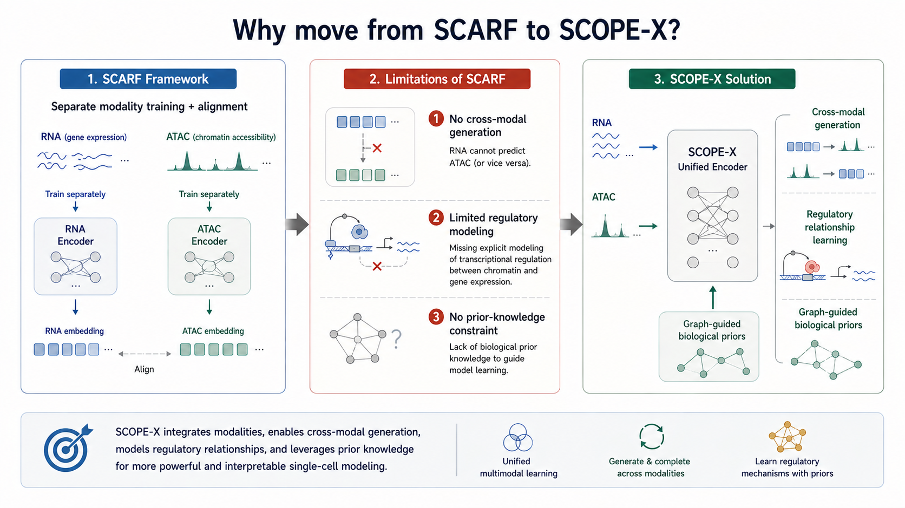

研究方向

SCOPE-X 研究方向定位
统一编码器 · 跨模态生成 · 大规模预训练
基于SCARF的经验，我们重新定义了核心问题：如何构建一个统一的单细胞多组学基础模型，同时具备表示学习、跨模态生成与零样本迁移能力？为此我们提出了SCOPE-X的三大目标。第一是统一编码器，支持RNA和ATAC任意组合输入，并实现基因组位置感知的tokenization。第二是跨模态生成，能够从RNA预测ATAC可及性，实现缺失模态补全。第三是大规模预训练，训练数据覆盖超过四百万细胞和五十多种组织类型，参数规模约一亿。这张图展示了SCOPE-X相比之前方法的优势。